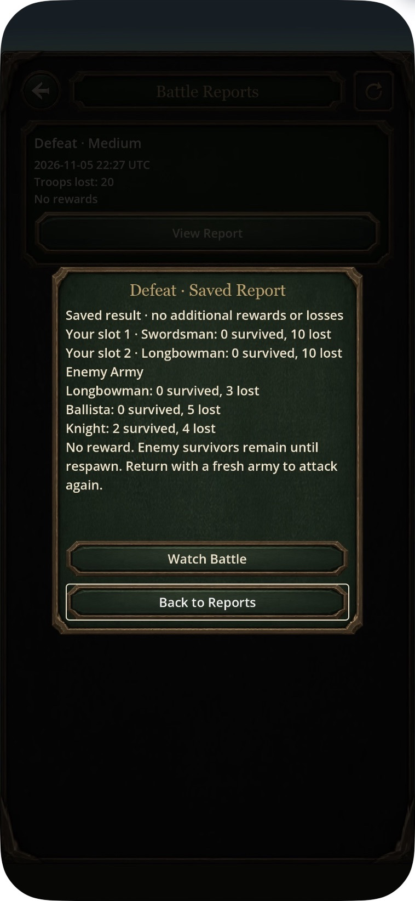
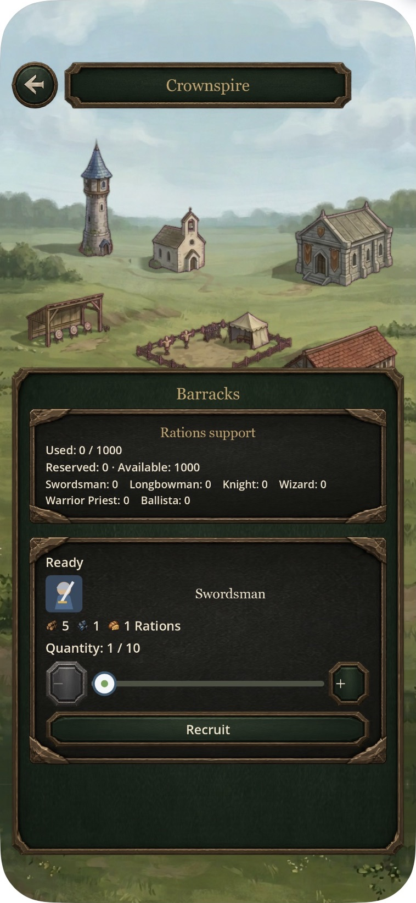
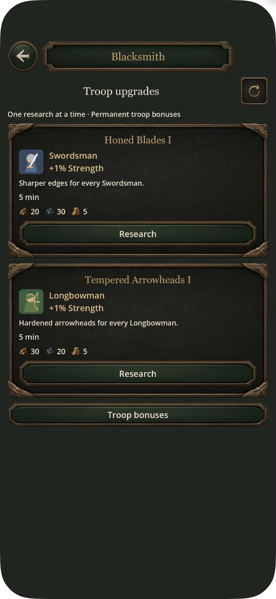

Kingdom Builder / Field Armies
Build your forces.
Take the field.
Your castle does more than grow. It prepares an army for the encounters waiting beyond its walls.
The field army
Troops with a home.
A roster with a purpose.
Field armies are made from troops recruited through your castle's military buildings. These are persistent forces belonging to your kingdom, not disposable pieces created afresh for every fight.
Recruited troops wait in the castle garrison. At the Training Grounds, choose how many to deploy into a six-slot exploration roster. Each occupied slot holds a troop type and a quantity, giving you control over the forces you commit.
The deployed roster is separate from your hero party. A Swordsman stack belongs in an army encounter; an individual Warrior hero belongs in a dungeon party. Both serve your kingdom, but they are not interchangeable.
Commit only what you mean to field.
Units left in the garrison are not part of that deployed force. Preparation, available support capacity and the composition of your army all matter before you accept an encounter.

Recruitment
A force raised
by your kingdom.
Recruitment starts in the relevant castle building. Choose a quantity, review its material cost and support requirement, then commit the resources to prepare those troops.
Recruitment jobs take time. The current system tracks troops being prepared alongside your existing forces, reserving the Rations capacity they will need rather than allowing every building to promise the same remaining support.
Once recruited, troops enter your persistent army and can be assigned from the garrison into your exploration roster. Recruiting and deploying are separate decisions: owning a troop does not automatically put it in the next field battle.

The roster
Different roles.
Different ways to fight.
The castle roster spans close combat, ranged attacks, magic and siege weapons. Range is part of a troop type's identity, while attributes such as Strength, Defense, Agility and Speed shape its behavior.
| Troop | Recruitment building | Battle role |
|---|---|---|
| Swordsman | Barracks | Close-range melee. |
| Longbowman | Archery Range | Long-range bow attacks. |
| Knight | War Academy | Close-range combat with a distinct unit profile. |
| Wizard | Tower | Magic attacks at medium range. |
| Warrior Priest | Monastery | A separate close-range troop type; not a dungeon Cleric. |
| Ballista | War Academy | Very long-range siege attacks. |
Composition is more than troop count.
Attack and armor types create different matchups. Humanoid, Beast, Spirit and Construct archetypes add another layer to the combat rules. Current statistics, timings and balance are development values, not a final competitive metagame.
3D field battles
Watch your preparation
play out on the field.
Army encounters now unfold with animated low-poly 3D troops on a grassy battlefield. Each visible model represents a stack, with its troop count and health displayed above it. Swordsmen close in, archers loose arrows and siege engines fire across the field.
Orbit and zoom the camera to inspect the action. Trees and rocks frame the battlefield without changing the combat rules. The six troop types have distinct models, movement, attack poses and projectiles.
This is an auto-battle, not the dungeon's turn-by-turn command system. Your committed forces and their attributes determine the encounter; watching or replaying it does not reroll the result.
Results that stay with your kingdom.
Casualties reduce your owned and deployed troops. Surviving enemies also retain their remaining quantities for your account until the normal respawn, returning at full health in their original formation. A fresh army can face what remains.
Victories can award resources. View Result settles the encounter directly; Watch Battle lets you revisit its presentation without another reward or another loss.

On the device
Steel, arrows
and a moving battlefield.
A short view of an actual saved encounter replay in the installed iPhone build. Watch melee and ranged stacks engage while troop quantities and health change with the battle.
One model represents each stack, not each individual soldier. This is presentation of an already settled encounter; recording it does not spend another army.
Open the field-army clipLong-term preparation
Invest in more
than another recruit.
The Blacksmith researches permanent troop improvements. Current examples strengthen Swordsmen and Longbowmen once the required castle buildings are complete.
Research uses resources and time, with one active research slot in the current system. A completed improvement applies to your eligible existing and future troops, connecting castle development to the strength of later armies.
Keep a record of the campaign.
Battle Reports preserves settled enemy encounters, including the result, troop losses and rewards. Reports can be reopened and supported battles watched again without spending troops or receiving the same reward twice.
That gives field battles a history: what you committed, what survived and what your kingdom gained.

Two kinds of expedition
An army is not
a dungeon party.
Field armies use quantities of recruited troops and 3D auto-battles. Dungeon parties use up to four named heroes, individual equipment and turn-based encounters inside a first-person adventure. The distinction is central to the game's mix of strategy and exploration.
A companion's contribution.
The Menagerie's equipped Lion Cub adds 1% Attack to all your army types, alongside eligible Blacksmith improvements. That bonus is fixed when a field encounter begins and does not apply to dungeon heroes. Meet the Menagerie companion.